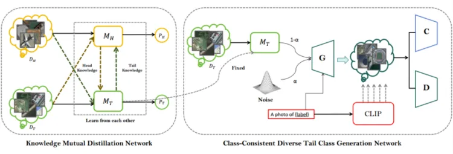

Email: mikamijpen@mail.dlut.edu.cn
“Done is better than perfect.”
“Know what you actually want to do and know what you are capable of.”
“Out of clutter find simplicity.”
You can see all of my ML notes in this repository. Some of what I'd like to explore most are as follows:
Demo: dialog system via VITS-based fine-tuning +character.ai api call code report
[TGRS2024]Text-Guided Diverse Image Synthesis for Long-Tailed Remote Sensing Object Classification( minor revisions)
